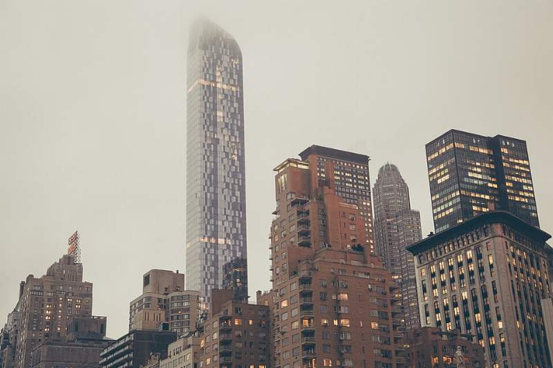

Portfolio
Our Recent Projects





Contact
Get In Touch
⌖
24 Harbour Street, London, WC1B 3DG
✆
+1 (555) 019 7755
✉
hello@example.com
Portfolio

Contact
⌖
24 Harbour Street, London, WC1B 3DG
✆
+1 (555) 019 7755
✉
hello@example.com